Исторические и справочные гербы
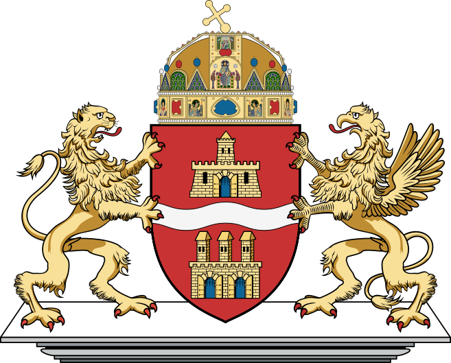

Budapest
Guide. Places in this edition: 30.
OTIUM is the practice of deliberate leisure. In the classical sense, otium is not escape from work but time when attention returns to memory, landscape, and thought — without a utilitarian deadline.
We shape routes for lingering, not for checklist tourism. The goal is presence in a place rather than consumption of sights.
OTIUM is not a tour operator. It is an invitation to walk, pause, and leave a route unfinished if the light on a façade deserves another minute.
Исторические и справочные гербы

Guide. Places in this edition: 30.
Будапешт — столица Венгрии, образованный слиянием Буды, Пешта и Обуды в конце XIX века.
Римские корни, средневековая крепость на холме, эпоха Османской империи и расцвет Австро-Венгрии оставили мосты, купальни Сечени и парламент на Дунае. Город — центр музыки, архитектуры модерна и термальной культуры.
Andrássy út
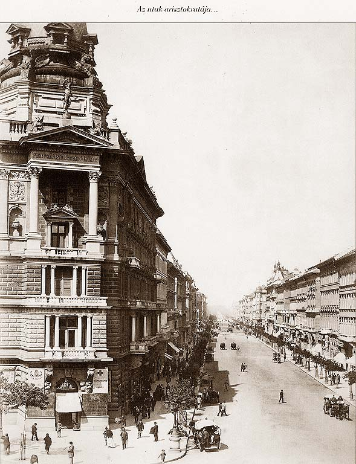
Grand boulevard lined with mansions, embassies, Opera, and House of Terror museum—UNESCO buffer around the Millennium Metro below.
Laid out from 1872 as a representative axis for the growing capital.
Defines Pest’s elegant 19th-century urban fabric.
Aquincum Múzeum
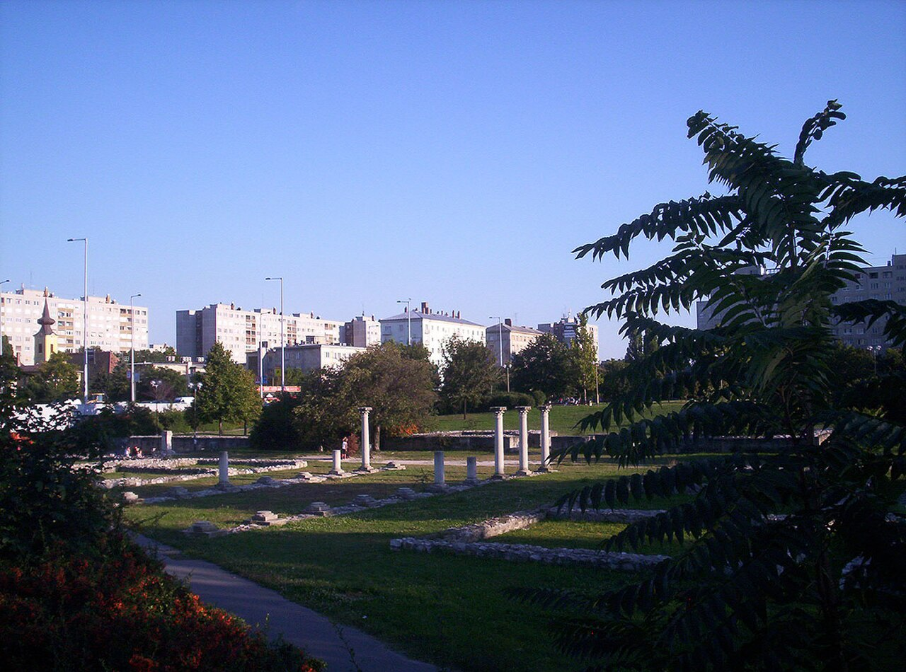
Budavári Palota
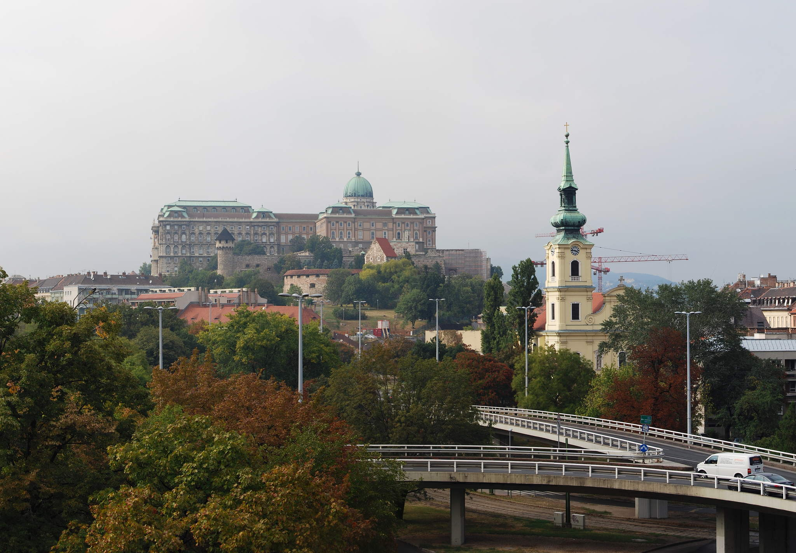
Royal palace complex housing the Hungarian National Gallery, the Budapest History Museum, and National Széchényi Library.
Royal seat from the 13th century onward; repeatedly destroyed and rebuilt—today’s shell largely mid–20th century.
UNESCO-listed Buda Castle Quarter core with ramparts, churches, and cobbled streets.
Sikló
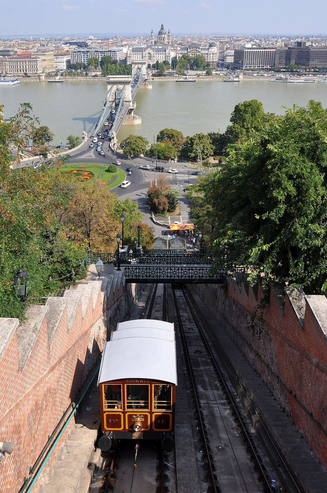
Citadella (Gellért-hegy)
Dohány utcai zsinagóga
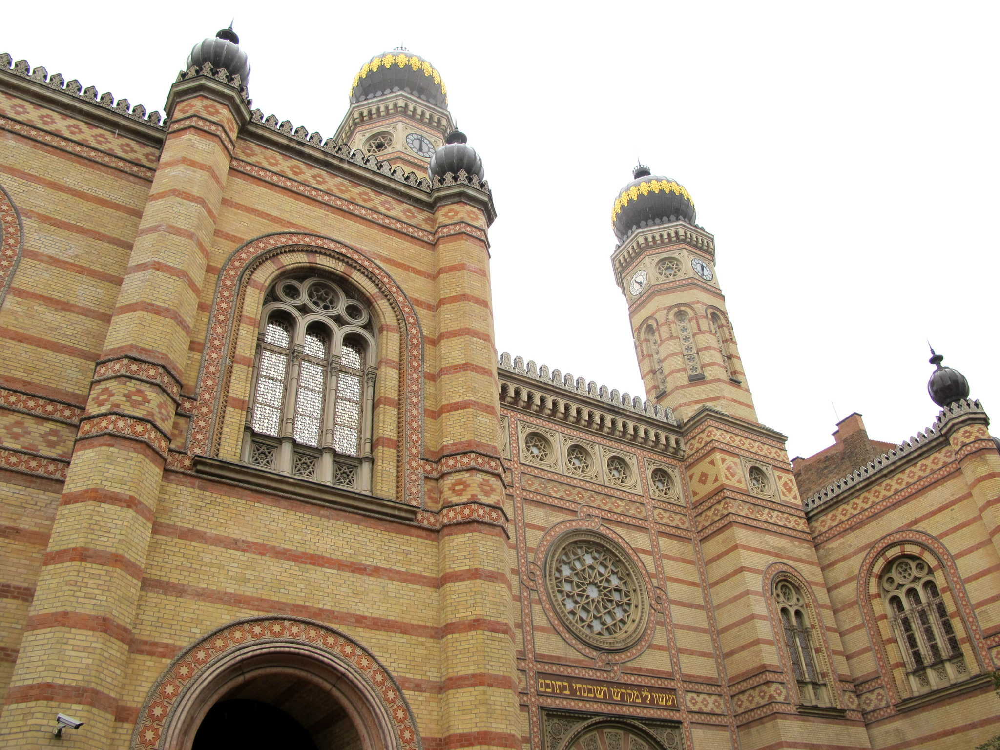
Moorish Revival synagogue—largest in Europe by seating—with museum and cemetery garden in the block.
Built 1854–1859; the ghetto wall during the siege of Budapest ran partly through the complex.
Centre of Neolog Judaism in Hungary and a key site on Jewish heritage walks.
Halászbástya
Fairytale terraces and turrets above the Danube with views toward Parliament—built as a lookout, not a fortress.
Completed around 1902 to designs by Frigyes Schulek near Matthias Church; partly fee-charging for upper terraces.
Romantic panorama point and wedding-photo favourite above the river bend.
Gresham-palota
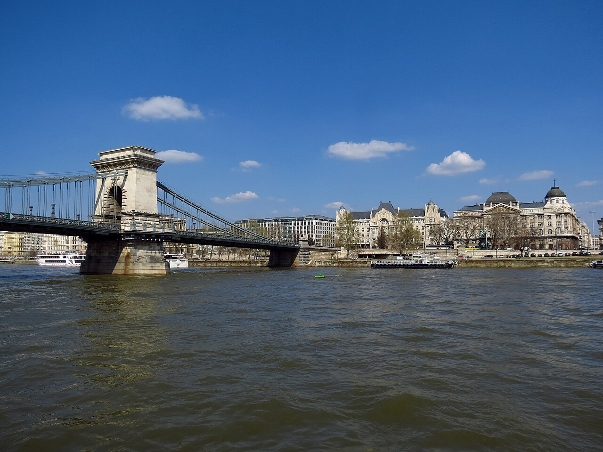
Gellért-hegy
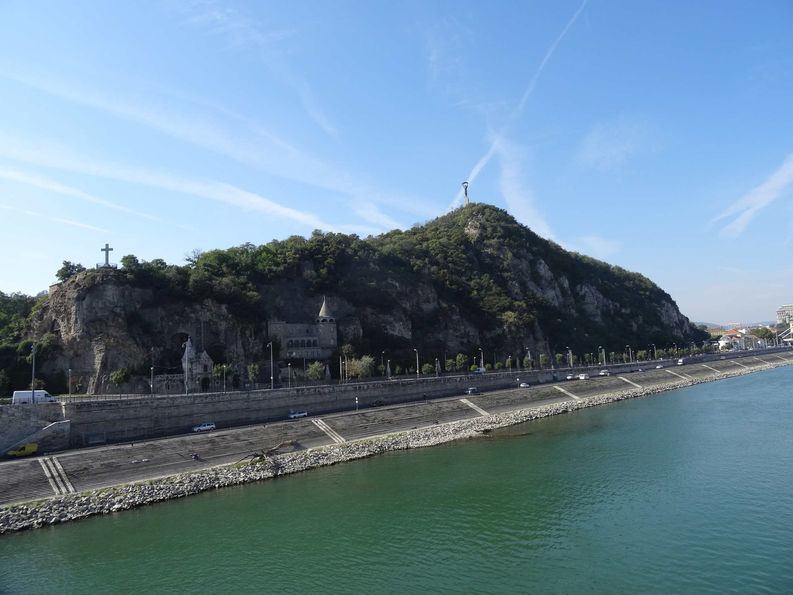
Limestone hill above the Danube: Citadel, Liberty Statue, and lookout paths over bridges and rooftops.
Fortifications from the 19th century; the giant female Liberty figure dates to Soviet-era commemoration, reinterpreted today.
Classic sunset viewpoint and a geological backdrop to the Gellért Baths below.
Nagyvásárcsarnok
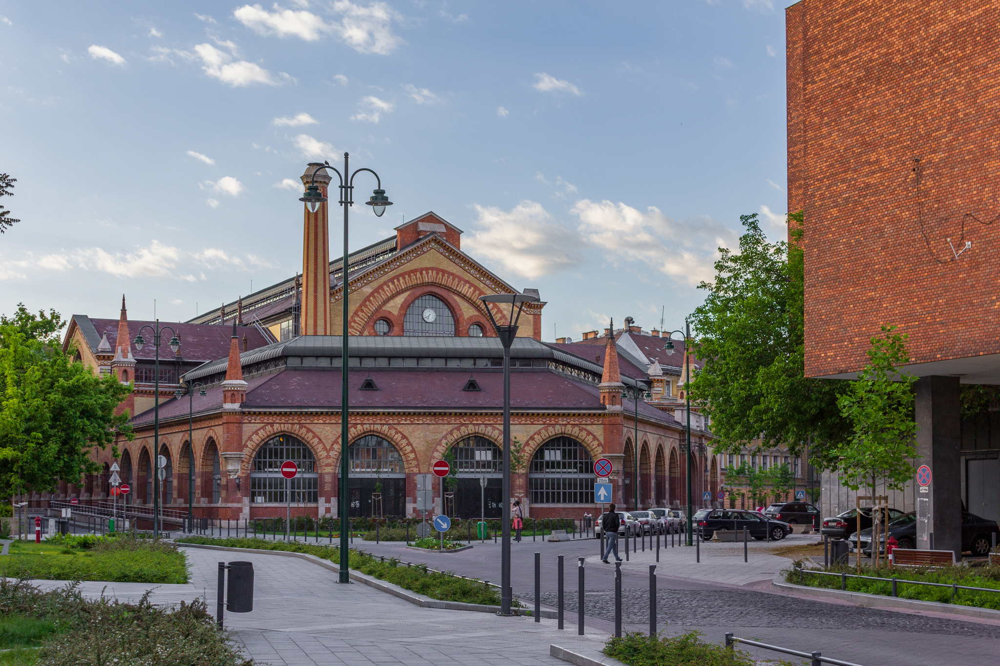
Iron-framed hall with a colourful Zsolnay roof: paprika, lángos, and souvenirs on the ground, more food upstairs.
Opened in 1897; designed by Samu Pecz as a modern wholesale market near the river and tram termini.
Working market and tourist ritual in one noisy, fragrant building.
Hősök tere
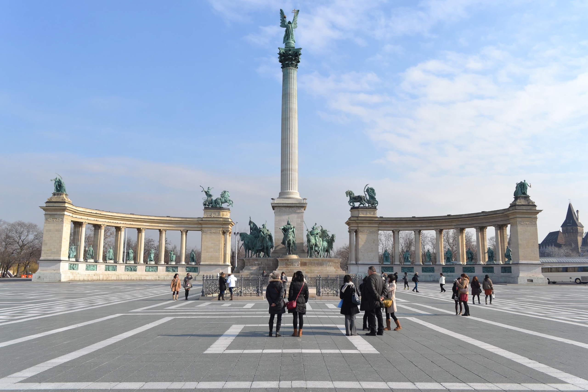
Monumental square with the Millennium Memorial, colonnades of historic figures, and two major art museums on either side.
Laid out for Hungary’s 1896 millennium celebrations; later adapted as a site for mass gatherings and national holidays.
Hungarian history in stone—mythic chieftains, kings, and independence themes in one vista.
Terror Háza

Magyar Nemzeti Múzeum

Országház
Neo-Gothic riverside parliament with a tall central dome and long symmetrical wings—Hungary’s largest building and a postcard symbol of Budapest.
Built from the late 19th century after the 1867 Compromise; designed by Imre Steindl. Heavily damaged in World War II and restored in stages.
Seat of the National Assembly and a national emblem of Hungarian statehood.
Magyar Állami Operaház
Renaissance Revival opera house with rich auditorium gilding—home to opera and ballet after a major recent restoration.
Opened in 1884 to Miklós Ybl’s design; acoustics were praised from the first season.
One of Europe’s great lyric theatres and a UNESCO-listed stretch of Andrássy Avenue.
Kopaszi-gát
Szabadság híd

Green Art Nouveau truss bridge with a central pedestrian strip—popular at sunset and during summer festivals.
Opened in 1896 as Franz Joseph Bridge; renamed after 1945. Trams share the deck with walkers.
Visual neighbour to the Great Market Hall and Gellért Hotel.
Margitsziget
Green kilometre-long island: promenades, ruins, a small zoo, pools, and summer musical fountain shows.
Monasteries once stood here; today it is a public park with sports facilities and spas.
Local lung between Buda and Pest—runners, families, and festival crowds share the paths.
Mátyás-templom
Colourful tiled roof and mixed Gothic lines: coronations and royal weddings once took place under its vaults.
Core from the 13th–15th centuries with later Baroque and 19th-century Neo-Gothic restoration by Frigyes Schulek.
Buda’s main church for centuries and a visual anchor next to the Fisherman’s Bastion.
Iparművészeti Múzeum

Szépművészeti Múzeum
Neoclassical temple of art facing the Hall of Art—Old Masters, Egyptian antiquities, and a strong Spanish collection.
Opened in 1906; long renovation cycles refreshed galleries and climate systems.
Hungary’s premier encyclopaedic fine arts museum.
New York Kávéház
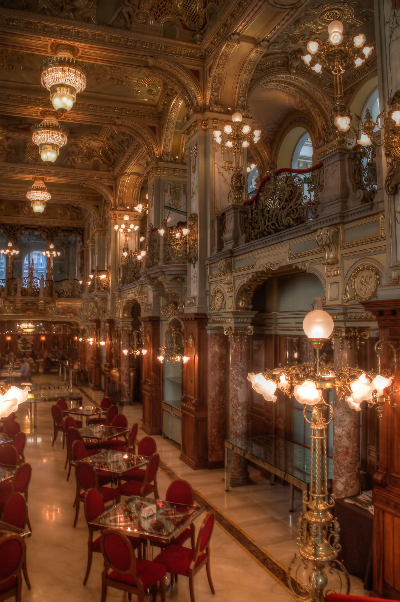
Gilded coffee palace—paintings, stucco, and chandeliers in a revived fin-de-siècle interior.
Opened in 1894; fell into decay under communism, then lavishly restored as a hotel café.
Tourist-priced but unmatched for Belle Époque atmosphere.
Rudas gyógyfürdő
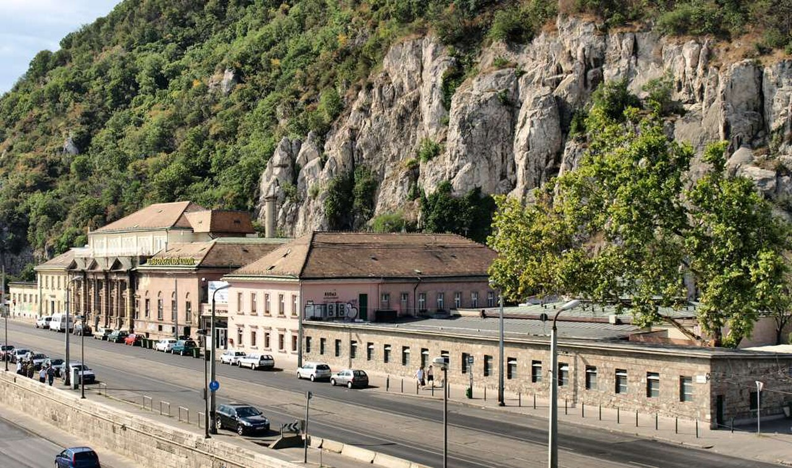
Ottoman-era dome and octagonal pool under pencil columns, plus newer rooftop tubs with Danube views.
Turkish bath from the 16th century, expanded across centuries; gendered days still apply in some thermal areas.
Direct experience of Budapest’s Turkish layer beneath the modern spa industry.
Cipők a Duna-parton
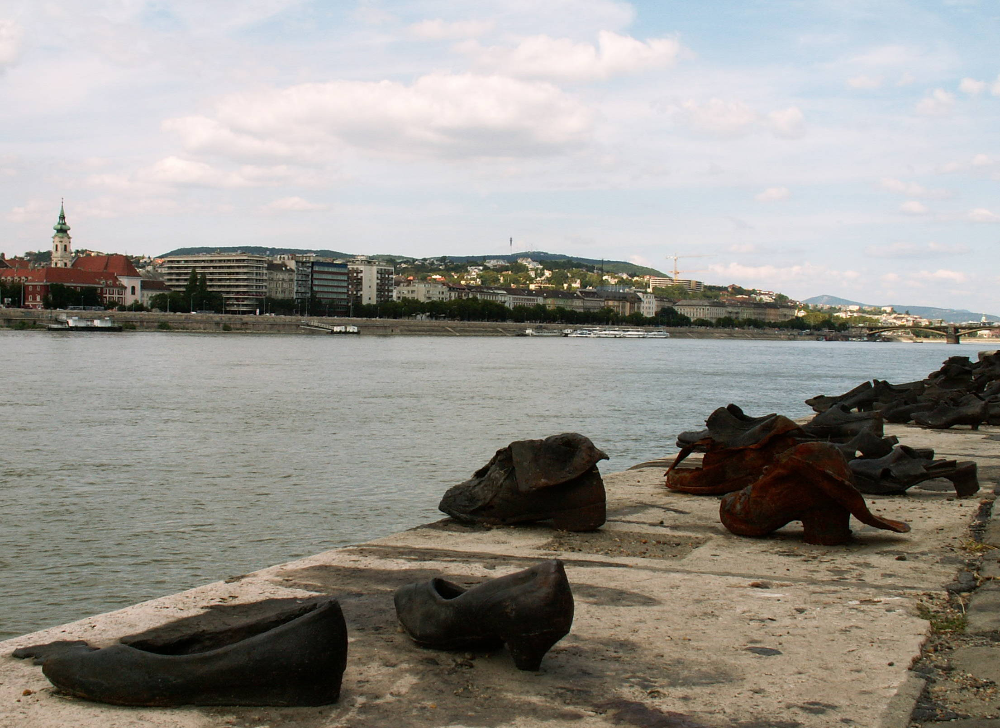
Sixty pairs of cast iron shoes recall Jews shot into the river by Arrow Cross militia in 1944–45.
Created by Gyula Pauer and Can Togay (2005) as a quiet riverside memorial.
One of Budapest’s most moving Holocaust sites—flowers and candles appear daily.
Szent István-bazilika
Neoclassical basilica with a climbable dome; houses the reliquary of St. Stephen, Hungary’s first king.
Construction spanned the 19th century after an earlier church collapse; dome completed with engineering lessons from the saga.
Co-cathedral of Esztergom–Budapest and a major venue for state and liturgical events.
Újpest

Kazinczy utca

Széchenyi lánchíd
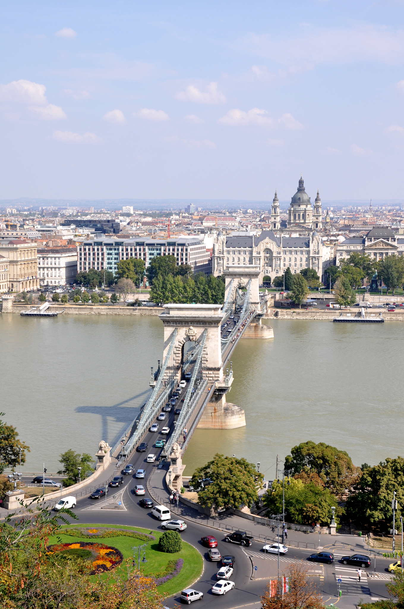
The first permanent bridge linking Buda and Pest, with stone towers and suspension chains—still a main pedestrian and tram crossing.
Opened in 1849; named after Count István Széchenyi. Rebuilt after World War II using original design principles.
Urban link that literally unified the two cities long before their official merger.
Széchenyi gyógyfürdő
Yellow Neo-Baroque bath complex with outdoor pools steamy in winter—social Budapest at its most relaxed.
Opened in 1913; water is supplied from the Széchenyi thermal spring system under the park.
One of Europe’s largest spa complexes and a symbol of Budapest’s bath culture.
Vajdahunyad vára
Romantic composite castle copying Transylvanian and Romanesque motifs—originally temporary for 1896, rebuilt in stone.
Designed by Ignác Alpár as a millennium exhibition pavilion; today it houses the Hungarian Agricultural Museum.
Fairytale silhouette on the boating lake minutes from Széchenyi Bath.